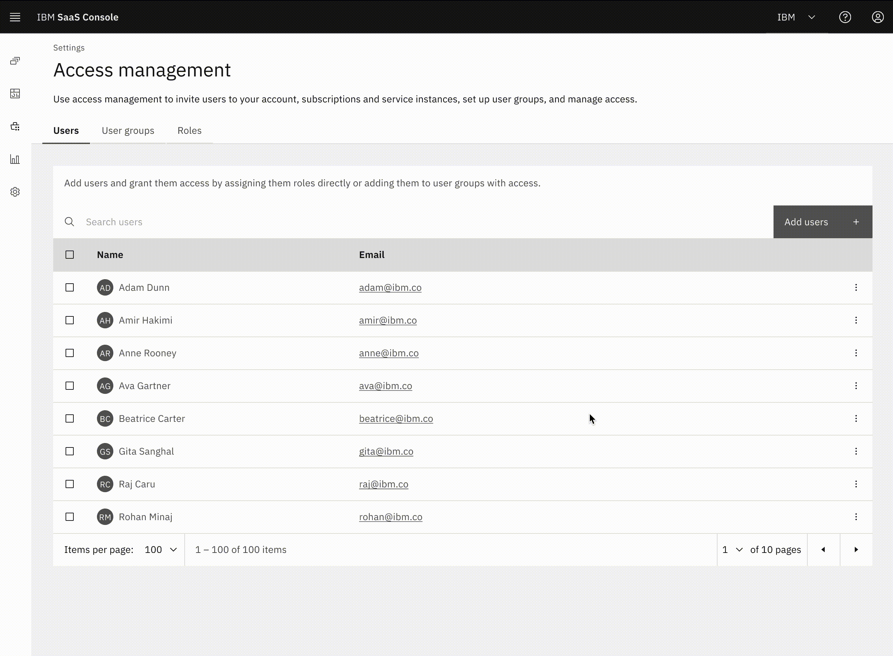
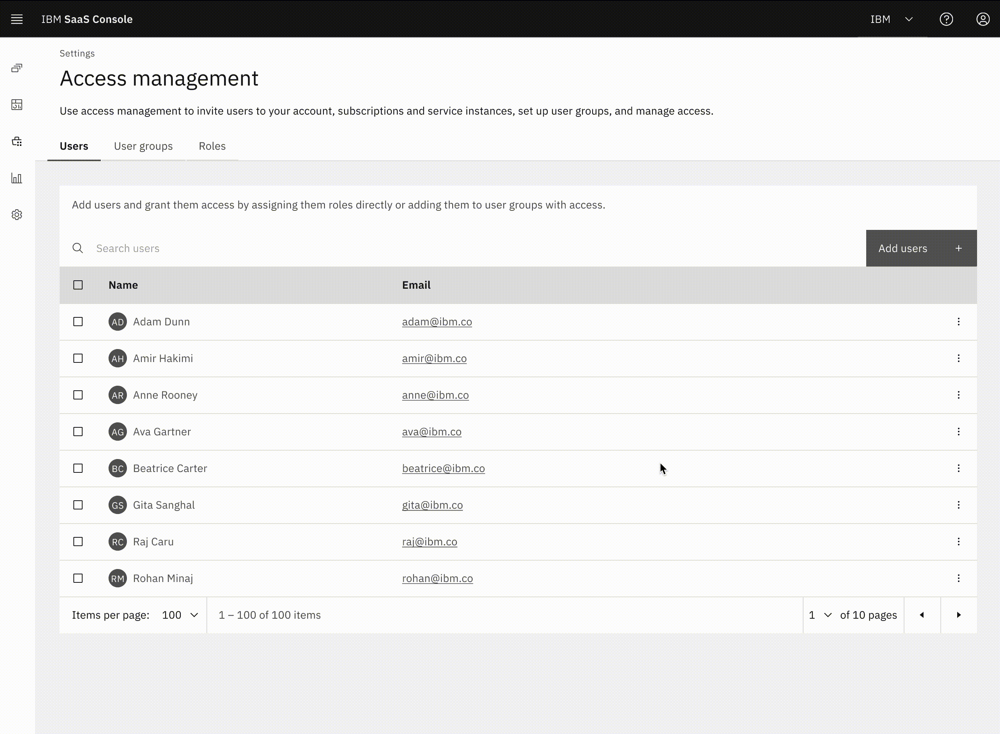

5 min read

Forbes reports that 90% of large firms use multiple clouds, like IBM, AWS, Azure, and GCP. Having products across multi-clouds can suit products with overlapping needs. Customers want a cloud service provider (CSP) that is cost-efficient, reliable, and scalable. But not all CSPs look, feel, and function the same way.
The Multi-cloud SaaS Platform (MCSP) aims to unify its administrative features. Users can manage accounts, subscriptions, billing, identity, access, and single sign-on through MCSP. It provides common tools and infrastructure to speed up development.

As the product designer, I had to research and define IAM features for MCSP. I worked with designers, product managers, developers, architects, and content designers across six time zones.
In May 2022, IBM and AWS announced a Strategic Collaboration Agreement (SCA). This agreement includes many benefits for both companies. For IBM customers, they can now buy our SaaS products while hosting them on AWS. For MCSP, this boosts our IBM adoption and retention rates and our AWS partnership.
With this partnership, our strategy became:
My research led me to uncover two large problems:

This finite game of request and approval felt superfluous. All these systems have overlapping functionality but limit themselves. This creates a fragmented, inconsistent, and confusing experience. For IBM, this incurs redundant operational costs and results in missed sales opportunities.
The task was to create an experience for IT and System admins. It must let them identify, authenticate, and authorize any resource or entity, securely and efficiently, on a single platform. This included a focus on enhancing the onboarding experience and increasing adoption rates.
Simply put, who is this person? Are they allowed here? What are they allowed to do? Let’s ensure the right people have the right things for the right reasons.
For this first phase, we will focus on identity management and RBAC. IT and system admins can add and manage users and groups. For example, I can invite Michelle Yeoh and the Backstreet Boys to the pizza party.
IT and system admins can manage access for any users or groups to any resource. For example, Michelle gets VIP access. Other musical guests group with the Backstreet Boys.
Identity management involves verifying login attempts against a database of authorized individuals. It needs constant updates due to staff changes and shifts in roles and operations. IAM systems need secure authentication and authorization for every resource. Like I said, who is this person, and are they allowed here?
For us, this meant user lists with the ability to add, edit, view, and remove users.
After verifying a user's identity, access management grants them access to authorized resources. Organizations grant different access levels based on name, job title, permissions, and team. We call the process of granting appropriate access levels after authentication authorization. Like I said, what are they allowed to do?
We sought role-based access controls (RBAC). They can manage their scope (an account, subscription, or instance) and entities (a user, user group, and service ID).
On the technical side, we needed the flexibility of microservices. This enabled a personalized IAM experience. For example, one product wanted identity management and RBAC but not Service IDs and API keys.
The design team went through over twelve major iterations. Access management causing the most problems.
 

To fix both problems, we used IBM's Carbon Design System. Its Add/Select component replaced the fragmented dropdown for access management. The visual representation eliminated ambiguity, empowering users to make informed decisions with confidence. Testing access combinations encouraged exploration.
The MCSP's Identity and Access Management project began in January 2023. The beta was released in June 2024.
As organizations adopt SaaS, more employees are using various tools and services. Our next challenge lies in providing seamless and controlled access to this workforce.
Addressing these problems complies with other policies and regulations. MCSP IAM aims to create a secure, seamless access experience for employees and companies.